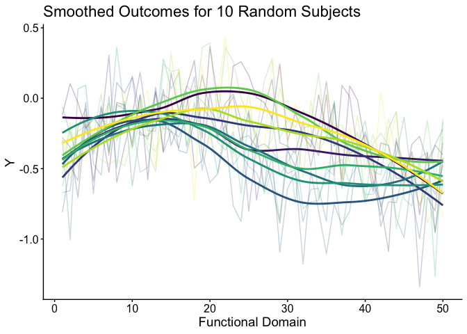
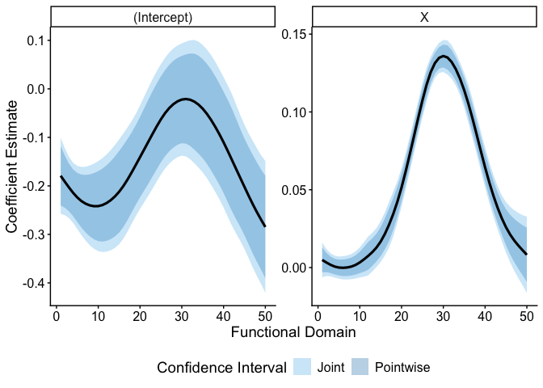

svyfosr
The goal of svyfosr is to perform survey-weighted function on scalar regression (FoSR).
Installation
You can install the development version of svyfosr from GitHub with:
# install.packages("pak")
pak::pak("jhuwit/svyfosr")Example
We load some simulated survey data.
library(svyfosr)
library(ggplot2)
data(sample_df)
sample_df %>%
dplyr::glimpse()
#> Rows: 975
#> Columns: 8
#> $ id <int> 1421, 1692, 2156, 2841, 3174, 5296, 6796, 7669, 7780, 9758, 1…
#> $ X <dbl> 2.00743154, -1.51583313, 0.06838228, -3.68259165, -2.57527700…
#> $ strata <int> 1, 1, 1, 1, 1, 1, 1, 1, 1, 1, 1, 1, 1, 1, 1, 1, 1, 1, 1, 1, 1…
#> $ psu <chr> "70", "70", "70", "70", "70", "70", "70", "70", "70", "70", "…
#> $ weight <dbl> 76.42787, 82.65374, 82.05325, 91.31247, 86.76654, 85.77362, 8…
#> $ p_stage1 <dbl> 0.02137936, 0.02137936, 0.02137936, 0.02137936, 0.02137936, 0…
#> $ p_stage2 <dbl> 0.6120031, 0.5659041, 0.5700456, 0.5122421, 0.5390799, 0.5453…
#> $ Y <dbl[,50]> <matrix[26 x 50]>
Y_df = sample_df$Y %>%
tibble::as_tibble() %>%
dplyr::mutate(id = dplyr::row_number()) %>%
tidyr::pivot_longer(cols = -id) %>%
dplyr::mutate(l = as.numeric(sub(".*Y", "", name)))
Y_df %>%
dplyr::filter(id %in% 1:10) %>%
ggplot(aes(x = l, y = value, group = factor(id), color = factor(id))) +
geom_line(alpha = 0.25) +
geom_smooth(se = FALSE) +
theme_classic() +
scale_color_viridis_d(option = "D") +
theme(legend.position = "none",
title = element_text(size = 14)) +
theme_sub_axis(text = element_text(size = 12),
title = element_text(size = 14)) +
labs(x = "Functional Domain", y = "Y", title = "Smoothed Outcomes for 10 Random Subjects")
#> `geom_smooth()` using method = 'loess' and formula = 'y ~ x'
We fit a survey-weighted FoSR model using balanced repeated replication (BRR) to estimate standard errors.
model_fit = svyfosr::svyfui(Y ~ X,
data = sample_df,
weights = weight,
family = gaussian(),
boot_type = "BRR",
num_boots = 100,
parallel = FALSE,
seed = 2213)
#> Estimating coefficients
#> Smoothing coefficients
#> Bootstrapping
#> Obtaining pointwise and joint confidence intervals
#> Completed!
model_fit
#> Survey FUI object
#> -----------------
#> Number of bootstrap replicates: 100
#> # A tibble: 100 × 7
#> l beta_hat lower_pw upper_pw lower_joint upper_joint var_name
#> <int> <dbl> <dbl> <dbl> <dbl> <dbl> <chr>
#> 1 1 -0.179 -0.240 -0.118 -0.258 -0.101 (Intercept)
#> 2 2 -0.191 -0.245 -0.138 -0.260 -0.122 (Intercept)
#> 3 3 -0.203 -0.252 -0.154 -0.266 -0.140 (Intercept)
#> 4 4 -0.214 -0.263 -0.166 -0.276 -0.152 (Intercept)
#> 5 5 -0.224 -0.275 -0.173 -0.289 -0.159 (Intercept)
#> 6 6 -0.231 -0.286 -0.177 -0.302 -0.161 (Intercept)
#> 7 7 -0.237 -0.296 -0.177 -0.313 -0.160 (Intercept)
#> 8 8 -0.240 -0.304 -0.176 -0.323 -0.158 (Intercept)
#> 9 9 -0.242 -0.310 -0.174 -0.330 -0.154 (Intercept)
#> 10 10 -0.242 -0.314 -0.170 -0.334 -0.149 (Intercept)
#> # ℹ 90 more rows
plot(model_fit)